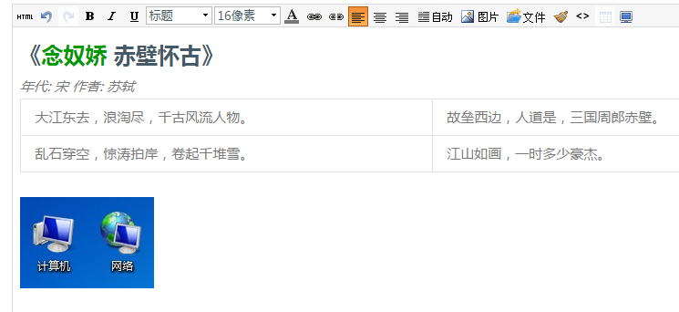

它基于 zepto.js，兼容 jquery.js，只有 82k，但是实现了标准浏览器下的编辑器常见功能：加粗、斜体、颜色、字体、字号、表格、图片上传、文件上传、客户端缩略、全屏，HTML 切换、上一步下一步等功能。 因为他不用考虑IE678，所以可以实现的非常优美，短小。写过编辑器的同学应该知道，编辑器最大的一个坑就是 IE 的 Range 跟 w3c 定义的 Range 的巨大鸿沟。如果不考虑 IE，代码可以精简很多。 特别要强调一点：支持了 QQ 截图直接粘贴，非常的方便，CTRL+ALT+A 截屏，CTRL+V 直接粘贴进编辑器。